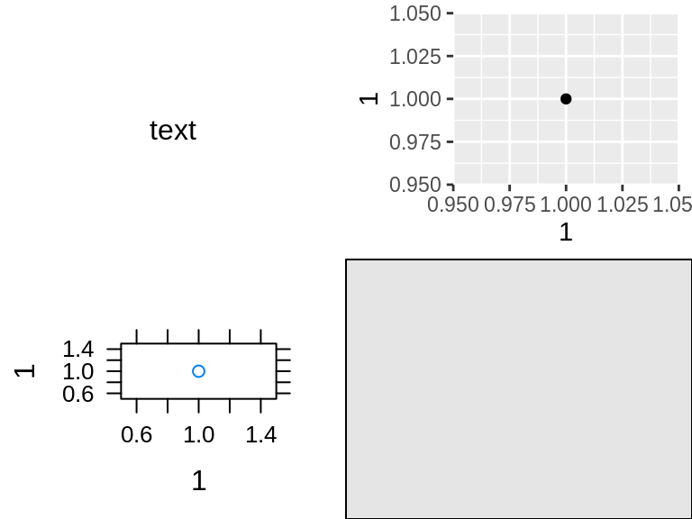
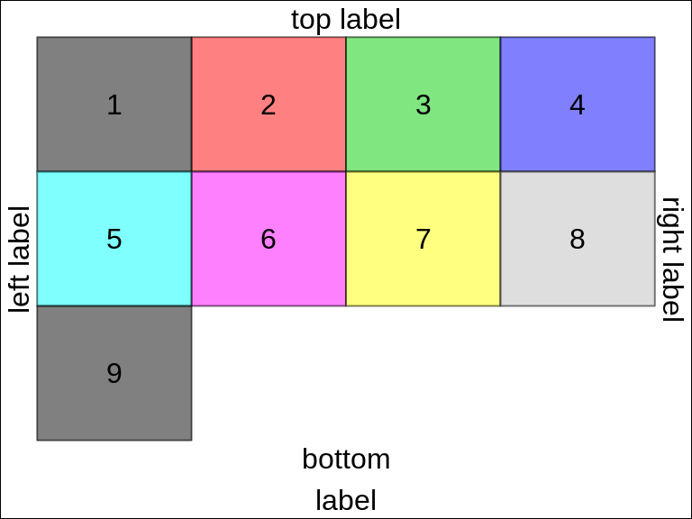
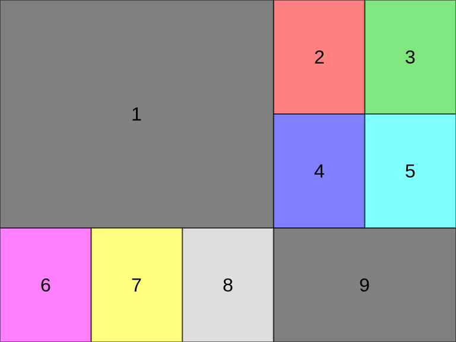
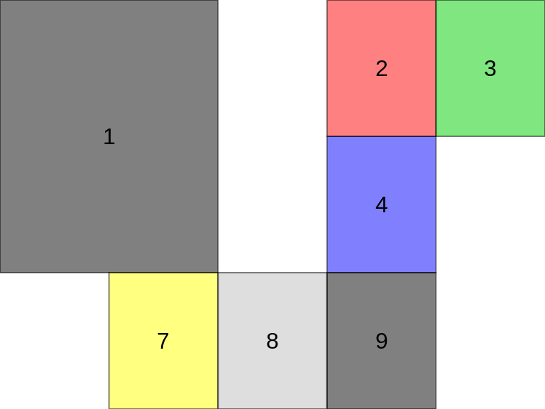
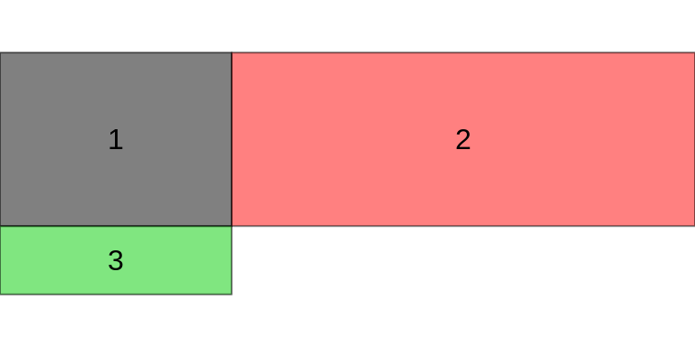
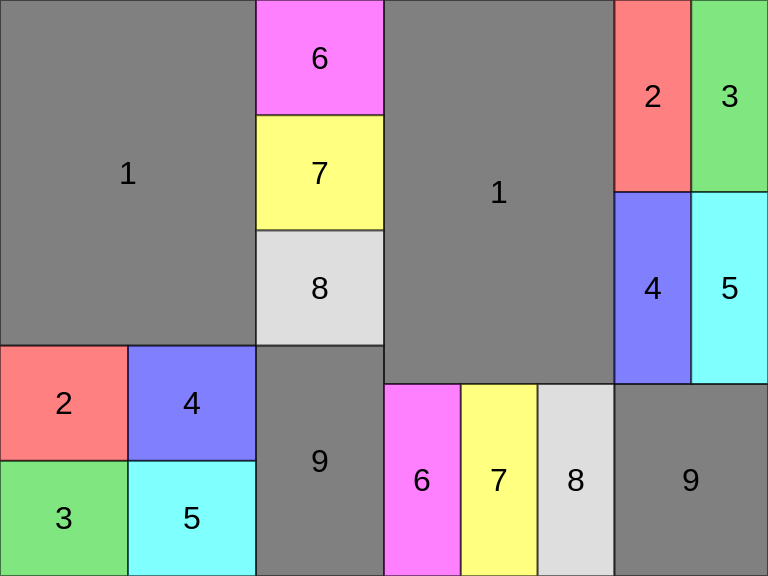
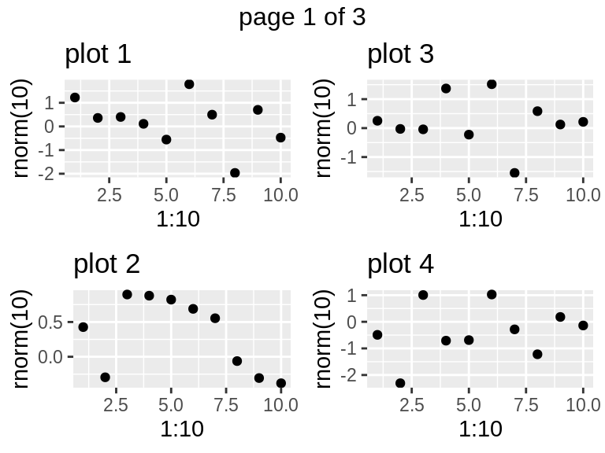
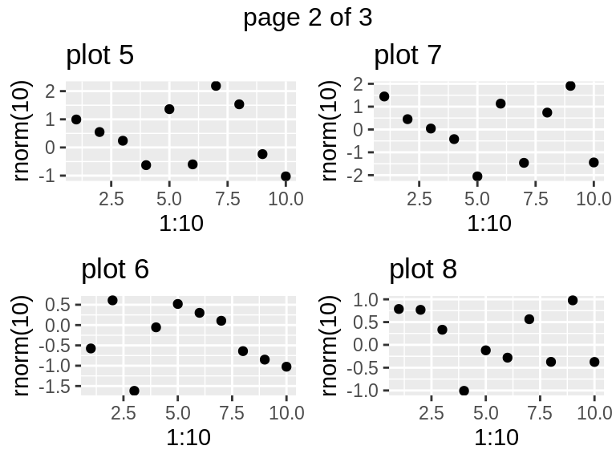
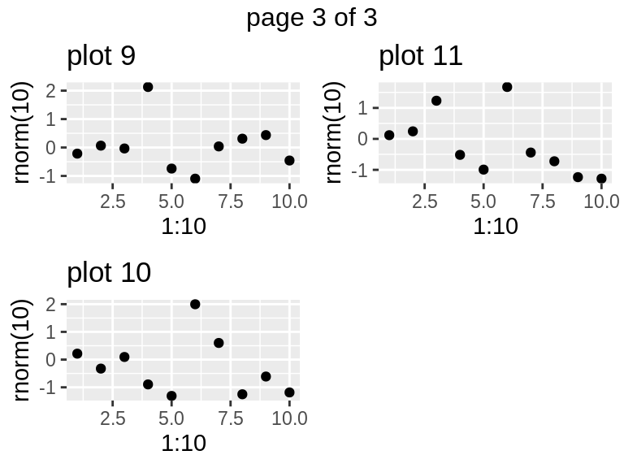

arrangeGrob.rmdThe grid package provides low-level functions to create graphical objects (grobs), and position them on a page in specific viewports. The gtable package introduced a higher-level layout scheme, arguably more amenable to user-level interaction. With the arrangeGrob/grid.arrange() pair of functions, gridExtra builds upon gtable to arrange multiple grobs on a page.
In this example we mix a few grobs and plots,
library(gridExtra)
library(grid)
library(ggplot2)
library(lattice)
p <- qplot(1,1)
p2 <- xyplot(1~1)
r <- rectGrob(gp=gpar(fill="grey90"))
t <- textGrob("text")
grid.arrange(t, p, p2, r, ncol=2)
gs <- lapply(1:9, function(ii)
grobTree(rectGrob(gp=gpar(fill=ii, alpha=0.5)), textGrob(ii)))
grid.arrange(grobs=gs, ncol=4,
top="top label", bottom="bottom\nlabel",
left="left label", right="right label")
grid.rect(gp=gpar(fill=NA))
We can provide a matrix defining the layout,
lay <- rbind(c(1,1,1,2,3),
c(1,1,1,4,5),
c(6,7,8,9,9))
grid.arrange(grobs = gs, layout_matrix = lay)
The layout itself may contain holes, but note that for any given grob index the region must be simply connected (no hole),
hlay <- rbind(c(1,1,NA,2,3),
c(1,1,NA,4,NA),
c(NA,7,8,9,NA))
select_grobs <- function(lay) {
id <- unique(c(t(lay)))
id[!is.na(id)]
}
grid.arrange(grobs=gs[select_grobs(hlay)], layout_matrix=hlay)
All cells are of equal size by default, but users may pass explicity widths and/or heights in any valid grid units, or as relative numbers (interpreted as null),

arrangeGrob
The grid.arrange() function draws on the device; for more complex layouts, we may want to store the gtable and combine it with other objects, e.g. forming nested layouts. To this end, use arrangeGrob(),
g1 <- arrangeGrob(grobs = gs, layout_matrix = t(lay))
g2 <- arrangeGrob(grobs = gs, layout_matrix = lay)
grid.arrange(g1, g2, ncol=2)
Finally, we may want to place grobs on multiple pages; the marrangeGrob() function provides a convenient interface for this, also compatible with ggsave().
set.seed(123)
pl <- lapply(1:11, function(.x)
qplot(1:10, rnorm(10), main=paste("plot", .x)))
ml <- marrangeGrob(pl, nrow=2, ncol=2)
## non-interactive use, multipage pdf
## ggsave("multipage.pdf", ml)
## interactive use; calling `dev.new` multiple times
ml